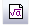
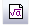

3D関数の関数プロットのレイアウトに数式を追加するには、ツールツールバーの数式の挿入ボタンをクリックします。
内容 |
グラフ操作：レイアウトにグラフを追加
選択したグラフウィンドウを新しいレイアウトにします。
必要なOriginのバージョン: Origin 9.1 SR0以降
1. g2layout option:=open;
2. g2layout row:=2 col:=2;
3. g2layout option:=project xgap:=0 ygap:=0;
4. g2layout option:=specified graphs:="graph1"+char(10)$+"graph2";
| 表示名 | 変数名 | I/Oとタイプ | デフォルト値 | 説明 |
|---|---|---|---|---|
| 配置 | option |
入力 int |
<自動> |
レイアウトに追加するグラフを指定します。 オプションリスト
|
| グラフ | graph |
入力 string |
<自動> |
設定が指定に選択されている場合、ユーザはこのテキストボックスにレイアウトに追加するグラフの名前を指定できます。この場合、テキストボックスの隣のブラウザが有効になり、有効になったブラウザ内で追加するグラフを選択する事ができます。しかし、設定変数で別のオプションが選択されている場合、このテキストは読み取り専用となります。つまり、追加されるグラフの名前を確認することはできますが、ボックスの中身は編集できません。 |
| 行数 | row |
入力 int |
<自動> |
レイアウトでの行数を指定します。グラフは、レイアウトに追加されるときに、行と列の並びを再配置します。 |
| 列数 | col |
入力 int |
<自動> |
レイアウトでの列数を指定します。グラフは、レイアウトに追加されるときに、行と列の並びを再配置します。 |
| グラフのアスペクト比を固定 | aspectratio |
入力 int |
0 |
グラフウィンドウの元の縦横比を維持するかどうかを指定します。 |
| 水平の間隔 | xgap |
入力 int |
5 |
隣り合うウィンドウ間の水平の間隔を指定します。 |
| 垂直の間隔 | ygap |
入力 int |
5 |
隣り合うウィンドウ間の垂直の間隔を指定します。 |
| 左端余白 | leftmg |
入力 int |
15 |
新しいグラフページまでの左余白を指定します。 |
| 右端余白 | rightmg |
入力 int |
10 |
新しいグラフページまでの右余白を指定します。 |
| 上部余白 | topmg |
入力 int |
10 |
新しいグラフページまでの上余白を指定します。 |
| 下部余白 | bottommg |
入力 int |
15 |
新しいグラフページまでの下余白を指定します。 |
| 向き | portrait |
入力 int |
0 |
レイアウトの向きを指定します。
オプションリスト
|
| 幅 | width |
入力 double |
<自動> |
レイアウトの幅を指定します。 |
| 高さ | height |
入力 double |
<自動> |
レイアウトの高さを指定します。 |
| 単位 | unit |
入力 int |
<自動> |
幅と高さの単位を指定します。
Note: 単位の選択がドロップダウンリストで変更されると、『幅』、『高さ』のテキストボックスの値は、レイヤの位置と大きさが変わらないように、その単位を使った値に自動的に更新されます。スクリプトを実行している場合はこの場合に当てはまりません。あらかじめ単位と値が決っている必要があります。ここは、ピクセルはドットの数を示します。ほとんどのOriginは1インチ当たり600ドットもあります。 オプションリスト
|
このXファンクションはレイアウトに指定したグラフを追加します。レイアウトでは、元のグラフは行＊列グリッドで配置されます。
下のサンプルでは4つの3D関数グラフをレイアウトに追加します。
このサンプルは3D OpenGLグラフプロジェクト、(\Samples\3D OpenGL Graph.opj)内にある、3D関数グラフ：ユーザ定義3Dパラメトリック関数グラフフォルダと関連があります。これは、メニューからサンプルOPJを開く：3DOpenGLグラフと操作すると選択できます、
|
3D関数の関数プロットのレイアウトに数式を追加するには、ツールツールバーの数式の挿入ボタンをクリックします。 |